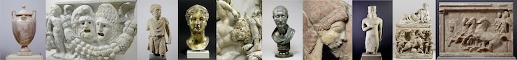

Il catalogo completo delle sculture nella Collezione di antichità del Museo statale di Berlino ("Antikensammlung der Staatlichen Museen zu Berlin") contiene circa 2.600 sculture greche, cipriote, etrusche e romane in pietra, oltre a numerosi bronzi. Vi sono stati inseriti sia gli oggetti ancora conservati, sia quelli andati perduti. Il catalogo è basato su un riesame generale di questi oggetti condotto da La rete berlinese delle sculture ("Das Berliner Skulpturennetzwerk"). Questo progetto di collaborazione tra la Collezione di antichità del Museo statale di Berlino e l'Istituto di archeologia classica della Libera Università di Berlino è stato finanziato tra il 2009 e il 2012 dal Ministero federale per l'educazione e la ricerca ("Bundesministerium für Bildung und Forschung"). Già nel 2011, gli 8277 bronzi della Collezione di antichità sono stati resi pubblici nel database online.

Le quasi 2.600 sculture della Collezione di antichità di Berlino sono state nuovamente fotografate da diverse angolazioni e aggiornate con fotografie storiche e documentazione di restauro. Molte sculture erano davanti ad un obiettivo per la prima volta e oltre cento ricercatori hanno contribuito con nuovi e dettagliate descrizioni. È stata posta particolare attenzione all'analisi del contesto, che ha portato a nuove scoperte attraverso una ricerca intensiva di archivio. Questo ha inoltre permesso un esame meticoloso del luogo originale di esposizione e della trasmissione delle sculture dopo l'epoca classica. Le sculture da Pergamo e Magnesia sul Meandro hanno avuto un'attenzione speciale, dato che la loro documentazione di scavo è stata studiata sistematicamente.
Nell'ambito de "La rete berlinese delle sculture" saranno documentati tutti i calchi in gesso da sculture greco-romane presenti in Berlino.
Participanti
Per la Collezione di antichità del Museo statale di Berlino: Andreas Scholl (project management); Martin Maischberger (finanziamento); Johanna Auinger, Annika Backe-Dahmen, Astrid Fendt, Ralf Grüßinger, Mathias Renè Hofter, Sabine Neumann (coordinamento, edizione, ricerca); Johannes Laurentius (fotografia); Wolfgang Maßmann, Sophie Haake-Harig, Pia Lehmann, Astrid Will (supervisione del restauro), Jörg Kleemann, Oliver Vollert (amministrazione del magazzino).
Per l'Istituto di archeologia classica della Libera Università di Berlino: Johanna Frabricius (project management); Ulrike Papadopoulos (assistente alla ricerca, edizione); Jana Beutler, Maria Goinis, Lukas Grzona, Margrith Kruip, Anja Küttner, Maria Lubitz, Annine Manz-Fuchs, Janina Rücker, Laila Sack, Janine Schlüter (studenti e assistenti di ricerca)
Per il Laboratorio digitale di archeologia dell’Istituto archeologico dell'Università di Colonia: Reinhard Förtsch (project management); Gisela Geng, Philipp Groß, Michael Remmy (fotografia); Johanna Fuchs, Patrick Gunia, Isabella Hodgson, Alexander Recht, Marcel Riedel, Louise Rokohl, Mahtab Salmannia, Marlene Scholz, Karen Schwane, Benjamin Gelhaar, Andreas Serifis, Jacqueline Klitzsch (studenti e assistenti di ricerca).
Un speciale ringraziamento agli autori citati nei singoli elementi del catalogo, in particolare coloro che sono venuti da istituzioni esterne e hanno donato gratuitamente tempo e conoscenze per questo ambizioso progetto.
Rolf Geserick, project manager dell'Istituto tedesco aerospaziale ("Deutsches Luft- und Raumfahrtzentrum") in Bonn ha aiutato molto il progetto in ogni fase, dall'inizio alla fine. Sostegno è arrivato anche dall'Associazione degli amici delle antichità nell'Isola dei musei.